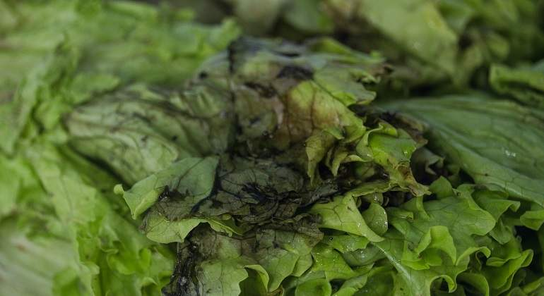

Ingredientes
- Hamburguesa del súper
- Aceitito pero poco
- Lo que le quieras poner (bacon, tomate, cebolla..)
- Sartén
- Pimienta negra recién molida del sur de Tumbuctú
- Sal normal que no hace falta gran cosa
Elaboración
¿Te creías que ibas a comerte esa COSA? No, no y no.
Aquí solo comemos cosas saludables, que nos ayuden a mantener el tipín que
tanto esfuerzo nos ha costado conseguir. Así que ahora que tengo tu atención vamos a
hacer hamburguesas de VERDAD.
Lo primero que tienes que hacer es comprar la carne envasada (no te vas a poner a
hacerlas que te van a salir fatal, asúmelo) y el pan igual, estás tu que haces el
pan. Y el kétchup igual, no vayas de listo.
Una vez tienes todo listo enciendes la vitro, pones la sartén con un chorrito de aceite,
echas la carne y que se haga a fuego medio. Cuando esté a punto le pones el queso encima,
la sacas de la sartén, la pones encima del pan y le echas lo que te de la gana. Por último
te la comes entera que aquí no se tira nada. Y si ya eres aquí el rey del fitness y vas
al crosfit ese te puedes hacer unas patatas fritas que están buenísimas.
Consejo
No pruebes las hamburguesas esas veganas de verdad, no saben a nada, solo era una broma, ¿vale?.
